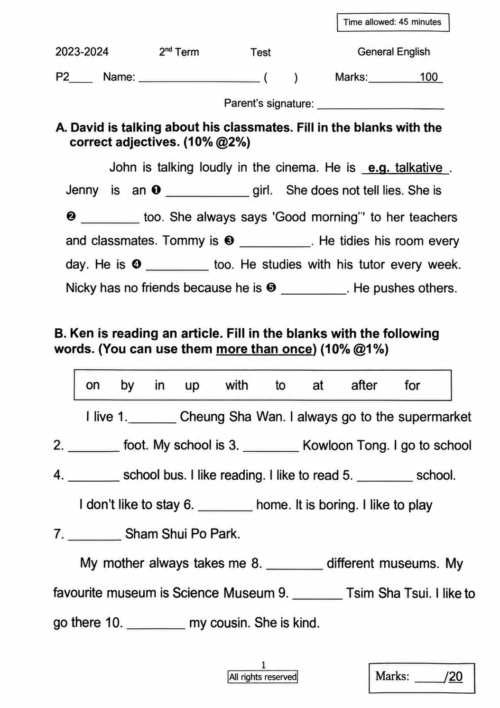
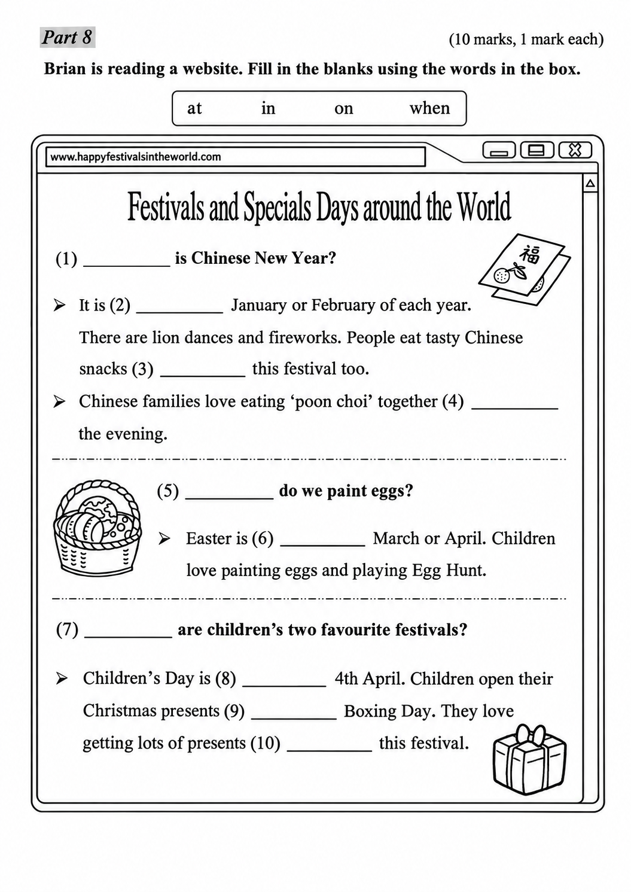
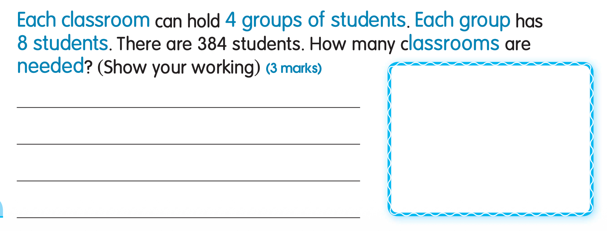
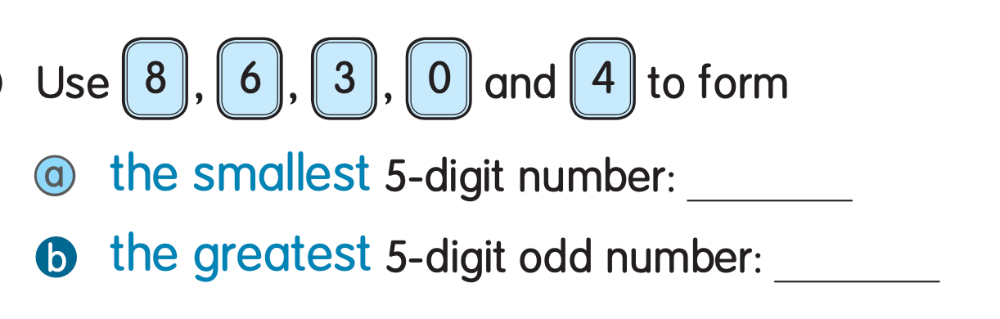

已掌握
| # | 中文意思 | 例句/提示 | 英文默写 | 已掌握 |
|---|---|---|---|---|
| noun 名词 | ||||
| 1 | 生日 | My is in May. | ||
| 2 | 网站 | The school has news. | ||
| 3 | 花园 | We play in the . | ||
| 4 | 作家 | The writes stories. | ||
| 5 | 音乐剧 | We watched a at school. | ||
| 6 | 周日 | We visit Grandma on . | ||
| 7 | 周三 | My piano lesson is on . | ||
| 8 | 医院 | The ambulance took him to the . | ||
| 9 | 司机 | The bus stopped at the crossing. | ||
| 10 | 腰带 | He wears a black . | ||
| verb 动词 | ||||
| 11 | 待在 | I at home on rainy days. | ||
| 12 | 绘画 | I a picture. | ||
| 13 | 借用 | May I your pencil? | ||
| preposition 介词 | ||||
| 14 | 在……之后；在……后面 | The cat is the box. | ||
| phrase 短语 | ||||
| 15 | 在……和……之间 | The park is the bank the school. | ||
| adjective 形容词 | ||||
| 16 | 柔软的 | The fur is . | ||
| 17 | 不礼貌的 | It is to shout. | ||
| 18 | 勤劳的，勤奋的 | She is a student. | ||
| 19 | 困难 | This question is . | ||
| noun/verb 名词/动词 | ||||
| 20 | 锻炼 | is good for your health. | ||
| # | 单词/词组 | 中文意思 | 例句/说明 | 已掌握 |
|---|---|---|---|---|
| adjective 形容词 | ||||
| 1 | worried | On the second day I was not worried. | ||
| 2 | popular | He is popular in class. | ||
| noun 名词 | ||||
| 3 | snack | I often have a snack after school. | ||
| 4 | buffet | We had lunch at a buffet. | ||
| 5 | mistake | I made a mistake. | ||
| 6 | article | Read the article. | ||
| 7 | choir | My sister sings in the school choir. | ||
| 8 | problem | Can you help me with this maths problem? | ||
| 9 | line | Write your name on the first line. | ||
| 10 | staff | The school staff are friendly. | ||
| 11 | relay race | Let's join the 4x100m relay race together. | ||
| 12 | environment | Let us all protect the environment and save the Earth! | ||
| 13 | chemical | The science teacher keeps the chemicals in a locked cupboard. | ||
| 14 | present | I gave my friend a birthday present. | ||
| noun phrase 名词短语 | ||||
| 15 | lemon tea | I'd like two cups of lemon tea, please. | ||
| 16 | a bowl | Put the egg into a bowl. | ||
| 17 | a pan | Heat some butter in a pan. | ||
| 18 | a card | My brother gave me a card. | ||
| verb 动词 | ||||
| 19 | swim | I can swim. | ||
| 20 | matter | It does not matter if we are a little late. | ||
| 21 | sleep | My little cat likes to sleep under the chair. | ||
| 22 | ensure | My job is to ensure that the zoo animals are healthy and happy. | ||
| 23 | sweep | The animals like to play with me when I sweep the floor. | ||
| preposition 介词 | ||||
| 24 | between | His classroom is between Classroom 3A and Classroom 3C. | ||
| verb phrase 动词短语 | ||||
| 25 | play tennis | I like to play tennis with my friend. | ||
| 26 | have a picnic | I want to go there because I want to have a picnic. | ||
| 27 | feed animals | We can feed animals on the farm. | ||
| 28 | make bread | They make bread on the farm. | ||
| 29 | feed the animals | I want to go to a farm because I want to feed the animals. | ||
| adjective phrase 形容词短语 | ||||
| 30 | end-of-year | We are getting ready for the end-of-year exam. | ||
| # | 中文意思 | 例句/提示 | 英文默写 | 已掌握 |
|---|---|---|---|---|
| time/date 时间日期 | ||||
| 1 | 五月 | is the fifth month. | ||
| 2 | 七月 | is the seventh month. | ||
| 3 | 八月 | is the eighth month. | ||
| time unit 时间单位 | ||||
| 4 | 周 | A has 7 days. | ||
| directions 方向 | ||||
| 5 | 北 | is a direction. | ||
| numbers 数字 | ||||
| 6 | 3 | is 3. | ||
| 7 | 5 | is 5. | ||
| 8 | 30 | is 30. | ||
| 9 | 60 | is 60. | ||
| 10 | 千 | One is 1000. | ||
| ordinal numbers 序数 | ||||
| 11 | 第二 | This is the shape. | ||
| solid shape 立体图形 | ||||
| 12 | 四棱柱 | A has quadrilateral faces. | ||
| 13 | 六棱柱 | A has hexagonal faces. | ||
| 14 | 球 | A is round. | ||
| geometry 几何 | ||||
| 15 | 直角 | A is 90 degrees. | ||
| # | 单词/词组 | 中文意思 | 例句/说明 | 已掌握 |
|---|---|---|---|---|
| operations 运算 | ||||
| 1 | borrowing | Borrowing helps when we subtract. | ||
| geometry 几何 | ||||
| 2 | right angle | A right angle is 90 degrees. | ||
| 3 | acute angle | An acute angle is smaller than a right angle. | ||
| 4 | opposite side | In a rectangle, the opposite sides are equal. | ||
| question word 题目词 | ||||
| 5 | onwards | Count onwards from 20. | ||
| shape 形状 | ||||
| 6 | circle | Draw a circle around the answer. | ||
| comparison 比较 | ||||
| 7 | lightest | The 1 kg bag is the lightest of the 1 kg, 2 kg and 3 kg bags. | ||
| 8 | heavier | A 3 kg bag is heavier than a 2 kg bag. | ||
| 9 | heaviest | The 3 kg bag is the heaviest of the 1 kg, 2 kg and 3 kg bags. | ||
| time/date 时间日期 | ||||
| 10 | leap year | A leap year has 366 days. | ||
| position 位置 | ||||
| 11 | behind | The bag is behind the chair. | ||
| 12 | back | The desk is at the back of the room. | ||
| 13 | arrow | The arrow points to the right. | ||
| operations calculation 运算 | ||||
| 14 | difference | The difference is the answer in subtraction. | ||
| 15 | multiplication | In multiplication, 3 times 4 equals 12. | ||
| 16 | product | The product is the answer in multiplication. | ||
| 17 | division | Division is the opposite of multiplication. | ||
| teacher math vocabulary 老师数学词汇 | ||||
| 18 | each | Each child has three pencils. | ||
| 19 | start | Start counting from ten. | ||
| measurement 测量 | ||||
| 20 | kilometer | One kilometer is 1,000 meters. | ||
| data charts 统计图 | ||||
| 21 | block chart | Read the block chart. | ||
| geometry tool 几何工具 | ||||
| 22 | geo-strip | A geo-strip can help make shapes. | ||
| 句型结构 | ||||
| 23 | Angle ... is smaller than Angle ... | Angle A is smaller than Angle B. | ||
| 24 | Angle ... is the largest. | Angle A is the largest. | ||
| 25 | Angle ... is the smallest. | Angle B is the smallest. | ||
| 26 | The lines are perpendicular to each other. | The lines are perpendicular to each other. | ||
| 27 | ... is to the east of ... | The school is to the east of the park. | ||
| 28 | ... is to the west of ... | The bank is to the west of the school. | ||
| plane shape 平面图形 | ||||
| 29 | upper base | The upper base of this trapezium is 4 cm long. | ||
| 30 | leg | A leg of a trapezium is a non-parallel side. | ||



